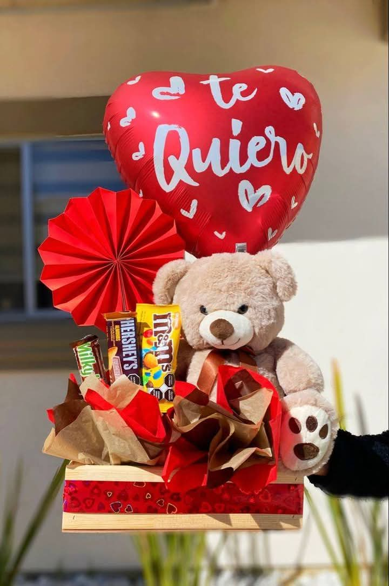
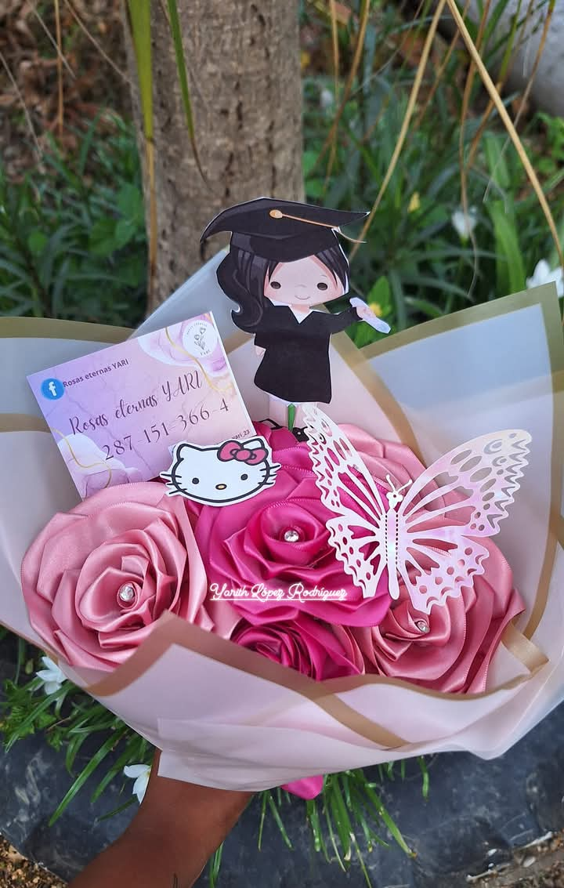

ROSAS ETERNAS YARI
Ubicado en calle 20 de noviembre, Col. Centro Otatitlán
lunes a sabado de 9:30 am a 6:00 pm
domingo 11:00 am a 5:30 pm
Redes Sociales:
287-151-3664
Rosas Eternas Yari
Rosas_eternas_yari_23
Esta empresa ofrece flores de listón y de limpiapipas que son personalizados al gusto del cliente. Se busca satisfacer las necesidades y gustos del cliente, que ellos reflejen sus sentimientos hacia una persona a través de ramos que perduren durante varios años.
Los ramos van desde una sola flor a más de 20 flores las que se puede combinar entre varios tipos de flores entre de listón y limpiapipas haciendo varias combinaciones.
Las flores que ofrece son:
Con los ramos se hacen en canastas con chocolates, dulces, bebidas (alcohólicas, refrescos, jugos, aguas, etc.), juguetes, peluches y muchas cosas más.
Se personalizan tarjetas para que hagan juego con el ramo.
